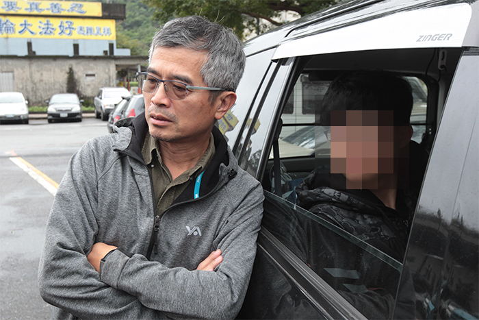
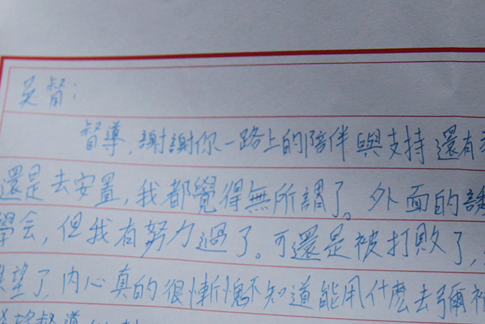
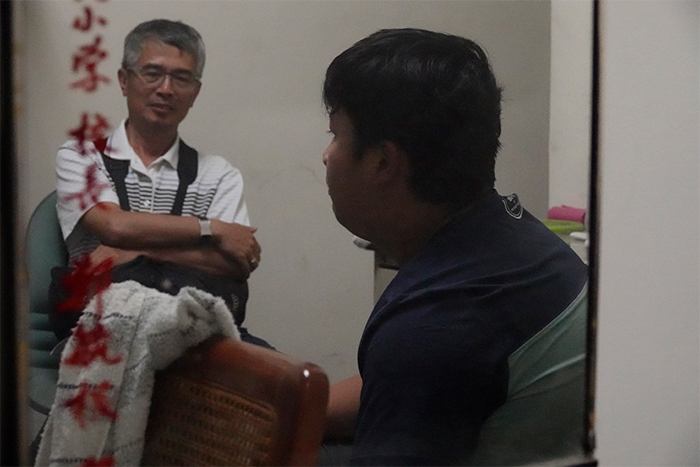

他連毒販都不放棄
退休軍人吳豫州奔走10年：「救一個是一個」
61歲的前上校督導吳豫州，頭髮斑白、身體硬朗，總掛著和藹的笑，他本該過著悠閒的退休生活，卻比退休前更忙碌。
他的手機總是響個不停，一下是輔導的孩子求助，一下是孩子的家長詢問，有時連半夜都會接到電話。
這些孩子都是被社會貼上標籤的問題少年，曾經吸毒、販毒、詐欺、偷竊等，但在吳豫州眼中，這些孩子的共通點不是「偏差」，而是「缺乏愛」。
十幾年來，他陪著這群孩子環島、爬山，希望在這群孩子的晦暗生命中刻下痕跡，作為繫住他們的一條繩。

「這些少年背後都有個悲慘的故事。」吳豫州道出，他們可能沒有親人、渴望母愛卻未得、家庭經濟狀況差，種種原因讓這些小孩倍感挫折，只能靠抽菸、吸毒獲得成就感，人生路途越走越曲折。
他不忍心放任這群孩子就此走偏，不僅自掏腰包買禮物獎勵、幫忙找工作，甚至帶著他們千里長征遠離毒品的誘惑，從46天的徒步環島，到21天爬八座百岳，他幾乎是用生命在陪伴孩子，希望作為孩子最堅強的後盾，「我不希望當孩子決定改變的時候，卻發現沒人支持。」
吳豫州認為，台灣反毒教育失敗，不斷強調毒品的危害性反而無感，會吸毒的小孩總結來說，就是好奇心、生活沒重心，「我為他們設計生活目標、多元學習，他自然（碰觸）毒品就變少了。」
吳豫州總是選擇「最嚴重」的個案陪伴，像是難介入、行為難矯正的孩子，因此每個個案對他來說都是很大的挑戰，「他會佔據很多時間，隨時call你，隨時問你，但他願意找你就是相信你。」
而讓他無怨無悔付出，其實是因為過往的遺憾。他娓娓道出，自己以前的好朋友，在高中時吸毒而死，「如果我當時陪著他，他就不會死了。」這份遺憾轉換成力量，他想陪著這些孩子走過生命的低潮期。

因此，吳豫州在擔任教育部新北市連絡處上校督導時，他便跑遍新北市各國中，不只演講教導學校如何早期發現、介入，更把這些遊走社會邊緣的孩子帶在身邊，1個、2個、10個，漸漸他輔導過的孩子已經數不清。
在這十幾年當中，吳豫州陪伴的每個孩子，都沒讓他少操心過。
吳豫州陪最久的孩子長達11年，因為販毒數度進出監獄，有天深夜，吳豫州再度接到他的來電，「他在完全絕望的時候會想起我，希望我幫他找工作。」但最後仍難回歸正途，變成通緝犯。
問吳豫州有沒有挫敗、想放棄的時候？他果斷地說：「沒有。」對他來說，遇見的每個孩子，都是珍貴的緣分，即使困難但他仍想，「救一個是一個。」
常有人問他，花這麼多力氣，最後孩子又回到原點，所有努力不就白費？吳豫州總是笑笑反問：「你怎麼知道白費了？」生命總是充滿衝突，孩子受傷、跌倒都是過程，不是帶孩子環島、爬山完就會全部改變，但這一路上的陪伴，會在將來某個時刻啟發孩子，「你要相信這個孩子有天一定會改變。」
吳豫州舉例，最近接到曾經陪伴過的孩子電話，問他怎麼報稅，「我想說這太棒了，代表他是賺合法的錢，已經開始對自己負責。」而這個孩子其實6年前讓他傷透心，許多人都說沒救了，但對他來說，只要不放棄，每個孩子都有機會，「也許今天他會再跌回去，但總有一天他會改變。」

「督導像親爹一樣，把我從苦難中救出來。」剛滿18歲的小胖（化名）也因為跟著吳豫州環島一圈，而慢慢走回人生正軌，「如果我沒遇見他，我可能到現在都還在外面賣藥。」吳豫州的陪伴，讓少年的人生有了不一樣的可能性。
其實吳豫州也很想停止忙碌的生活，去周遊列國，享受晚年生活，但他總想著，「有能力就多做一點，等到沒能力那天，我就不做了。」沒想過什麼時候要真正的退休，「只要孩子找我，我都會幫忙，有個孩子到26歲了還會來找我。」
對吳豫州來說，這些孩子在面對生命時起起伏伏，有些進出監所，就像船隻遇到暴風雨，回船塢整修，但風暴結束後，這些孩子會成為更堅強的船隻，回到海上乘風破浪。
而吳豫州，始終像座燈塔，在茫茫大海裡，為一艘艘迷航船隻指引開路。